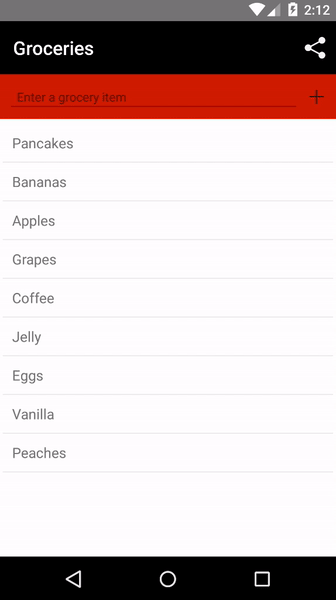
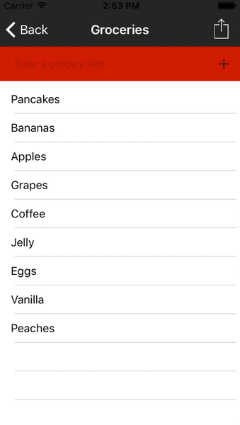

Chapter 5—Plugins and npm Modules
Chapter 5—Plugins and npm Modules
As you build more complex apps, you’ll likely run into functionality that is not implemented in the NativeScript modules. But no worries, as NativeScript lets you leverage npm (node package manager) to import npm modules into your apps. Alternately, you can install NativeScript plugins, which are simply npm modules that can access native code and use Android and iOS SDKs, if required.
In this chapter, you’ll install and use an external email validator module to verify the format of email addresses as they are entered on the registration screen. Then, you’ll add a NativeScript plugin, NativeScript social share, to let users share their grocery lists using their device’s native sharing widget.
Table of contents
5.1: Using npm modules
It would be nice to be able to make sure people are entering well-formatted email addresses into your app on the registration screen. You could write this functionality yourself, but validating email addresses is surprisingly tricky, and it’s a lot easier to use one of many npm modules that already provide this validation. For Groceries let’s see how to add this email-validator module to test for valid addresses.
Exercise: Install the email validator module
Return to your terminal and make sure that you are working in the root directory in your Groceries project folder, a.k.a. here:
undefined npm install email-validator --save undefined tns run ios --emulator undefined tns run android --emulator undefined tns livesync ios --emulator --watch undefined tns livesync android --emulator --watch undefined tns plugin add nativescript-social-share ```The install process does the same thing that the npm install command does—including retrieving the module from npm, installing the module in node_modules, and saving the module as a dependency in your app’s package.json—but the tns plugin add command additionally configures any native code that the plugin needs to use.
For example the NativeScript push plugin uses both iOS and Android SDKs, and the tns plugin add command takes care of installing those. The NativeScript flashlight plugin needs permissions to use the camera on Android, and the tns plugin add command takes care of setting that up too.
Now that you’ve installed the social share plugin, let’s look at how to use it.
Exercise: Use the social sharing plugin
Open app/pages/list/list.component.ts and add the following line at the top of the file, which imports the social share module you just installed:
Next you have to build some UI that lets you share a grocery list. To do so, open app/pages/list/list.html and add the following code at the very top of the file:
This code defines an ActionBar, which is a UI component that appears on the top of the screen, and which can optionally include menu items, or <ActionItem> components.
NOTE: On iOS devices,
<ActionItem>s are placed from left to right in sequence; you can override that (as the code above does) by providing anios.positionattribute.
Next, to add a bit of styling to this new <ActionBar>, add the following CSS to the top of your app/app.css file:
Finally, now that you’ve installed and imported the plugin, and setup a UI to use it, your last step is implementing the <ActionItem>‘s tap handler. Open app/pages/list/list.component.ts again and add the following function to the ListComponent class:
This code takes the grocery data from the grocery list array, converts the data into a comma-separated string, and passes that string to the social share plugin’s shareText() method.
WARNING: Because this section had you install a NativeScript plugin, you’ll have to rebuild your app one last time in order to test your changes. If you don’t remember how refer back to the previous section for instructions.
After you run the app, you’ll see a new button at the top of the screen. When you tap it, the native iOS or Android sharing widget will show to let you post your groceries to your social networks, or send them via email, message, or any other method you prefer.
 
Pretty cool, huh? The ability to use npm modules greatly expands the number of things you’re able to do in a NativeScript app. Need to compose emails in your app? Try out the NativeScript email plugin. Need to use the clipboard in your app? Try out the NativeScript clipboard plugin.
If you’re looking for NativeScript plugins start by searching both the Telerik NativeScript Plugins Marketplace and our community-curated list of plugins on npm. If you don’t find the plugin you need, you can request the plugin on our ideas portal, or you can take a stab at creating the plugin yourself.
Between NativeScript modules, npm modules, and NativeScript plugins, the NativeScript framework provides a lot of functionality you can use to build your next app. However, we’ve yet to talk about NativeScript’s most powerful feature: the ability to directly access iOS and Android APIs in TypeScript. Let’s look at how it works.